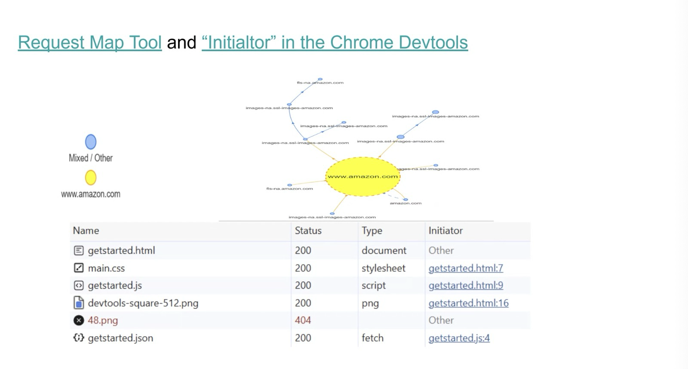
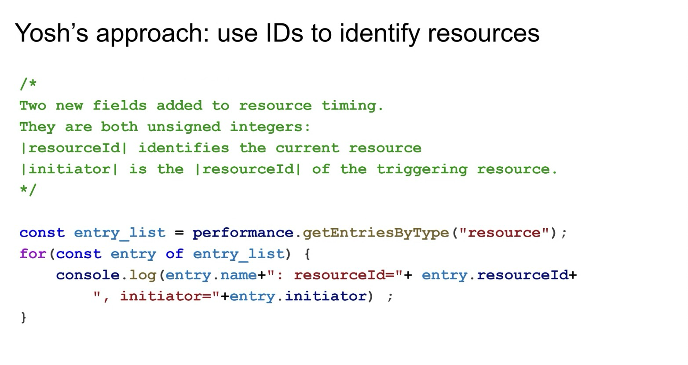
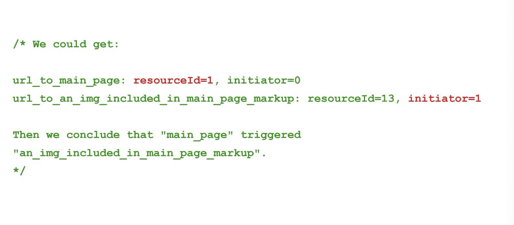
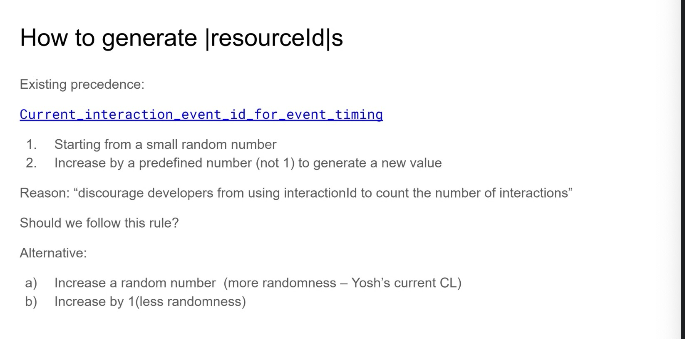
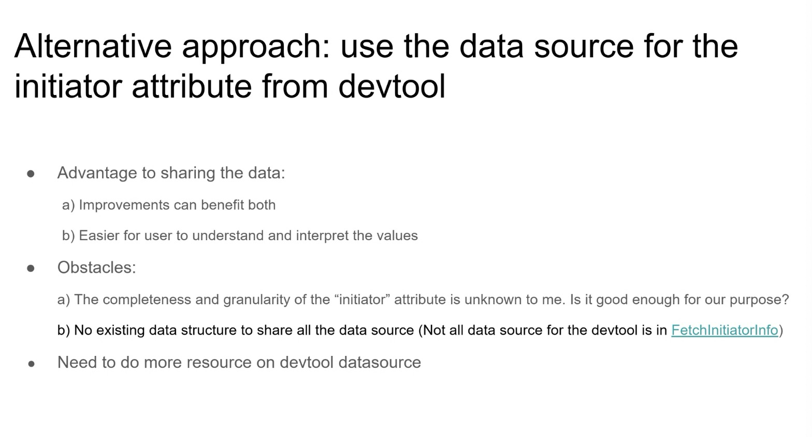
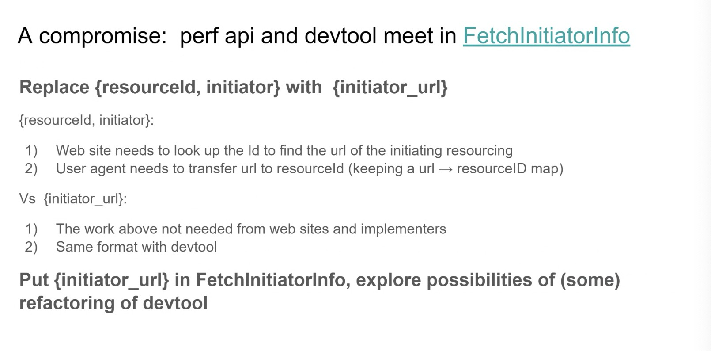
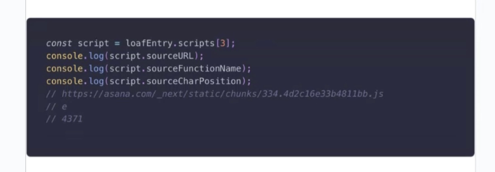
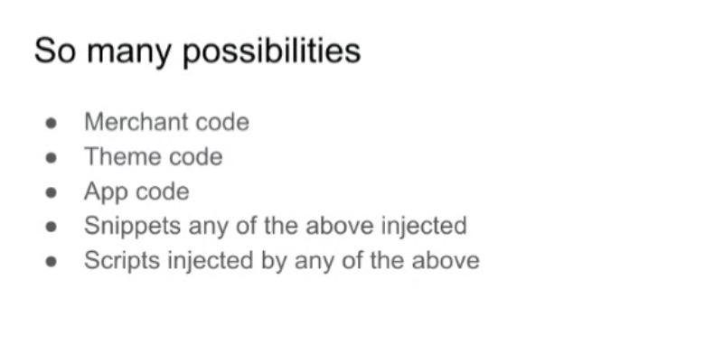
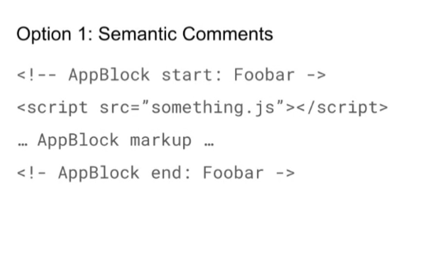
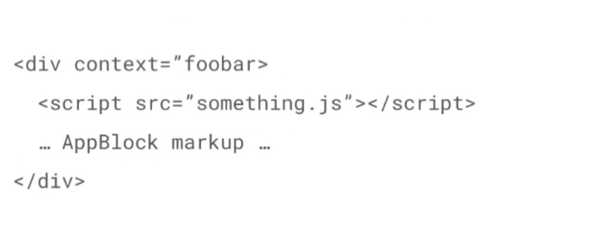

Participants
- Yoav Weiss, Nic Jansma, Alex Jose, Philip Tellis, Dan Shappir, Jacob, Alex Christensen, Patrick Meenan, Sean Feng, Guohui Deng, Andy Luhrs, Issac Gerges, Noam Helfman, Rafael Lebre, Michal Mocny, Dave Hunt, Annie Sullivan, Bas Schouten, Sergey Chernyshev, Barry Pollard, Jase Williams, Tariq Rafique, Benjamin De Kosnik, Paul Irish, Carine
Admin
- Next meeting: January 30, 2025 8am PST / 11am EST
- ElementTiming CfC Passed, adopted into groups’ charter under W3C Org on Github
Minutes
Resource Timing initiator - Guohui
Recording
- Guohui: linked to the explainer, please review them at your leisure
- … Idea brought up years ago. Yash made a design doc that explored that area and implementation ideas
- … Also put together a few CLs - tests and a partial implementation but nothing has landed in Chromium
- … Picking up this work, but everything is open for discussion

height: 858.00px; margin-left: 0.00px; margin-top: 0.00px; transform: rotate(0.00rad) translateZ(0px); -webkit-transform: rotate(0.00rad) translateZ(0px);" title="">- … Idea is available in lab tools, display a graph of the relationship between resources and which resource triggered the loading of which
- … “initiator” attribute at Chrome’s devtools also gives that information, not reported for failed fetches or root docs
- … goal is to collect that information in RUM. An accurate dependency tree can help optimize load speed, can help CDN optimize content delivery and understand where do rouge requests come from.

height: 830.00px; margin-left: 0.00px; margin-top: 0.00px; transform: rotate(0.00rad) translateZ(0px); -webkit-transform: rotate(0.00rad) translateZ(0px);" title="">- … Yash suggested to use an ID to identify the resources, so every RT entry will contain the resourceID and the initiator

height: 700.00px; margin-left: 0.00px; margin-top: 0.00px; transform: rotate(0.00rad) translateZ(0px); -webkit-transform: rotate(0.00rad) translateZ(0px);" title="">- … So a resource initiated by the main page (id=1) will have an initiator of 1

height: 818.00px; margin-left: 0.00px; margin-top: 0.00px; transform: rotate(0.00rad) translateZ(0px); -webkit-transform: rotate(0.00rad) translateZ(0px);" title="">- … The resource ID starts from a small random number and then increments with each resource. Very similar to interaction ID (but Yash’s implementation added some more randomness)
- … Major challenge is to find out how the fetch is initiated - many call sites in the browser
- … Where the CSS is the initiator - we don’t yet have an implementation
- … Yash tried to find the initiator independently - not using the initiator info that devtools are using

height: 846.00px; margin-left: 0.00px; margin-top: 0.00px; transform: rotate(0.00rad) translateZ(0px); -webkit-transform: rotate(0.00rad) translateZ(0px);" title="">- … An alternative is to use the data used by devtools. A shared data source can help improve both and would make it easier for users to understand.
- … A quick look in Chromium - unsure that the data in devtools is complete/accurate enough. In complex pages those attributes are sometimes missing. Needs to research further
- … There’s also no easy way to share the data with blink without refactoring
- … devtools use part of the information from FetchInitiatorInfo, but also uses information from other resources, so a refactoring may be required
- … Need to research this further

height: 794.00px; margin-left: 0.00px; margin-top: 0.00px; transform: rotate(0.00rad) translateZ(0px); -webkit-transform: rotate(0.00rad) translateZ(0px);" title="">- … Current thinking - replace resourceId with initiator_url
- … ID requires constant remapping to URL, and it may be easier to just send the URL
- … It’s also the same format that devtools use
- … Also want to explore refactoring the devtools code to move the initiator data into FetchInitiatorInfo
- … Need to research
- … For security, this needs to be exposed behind CORS checks, not TAO
- Nic: I think I followed the switch to URLs. URLs may not be unique in the page
- … e.g. in an SPA the same URL can be fetched multiple times and trigger different resources
- … Not sure how that would work
- Michal: similar question. What about returning another RT entry?
- … An RT entry can have a pointer to its initiator RT entry
- … The privacy/security considerations would be the same
- Barry: I like it, it would make it easier to figure things out on the client
- Michal: Do you always have a current resource, such that all new resource requests would have an initiator? How often do we know what the current resource is?
- Gouhui: I looked at Yash’s explorations. Solve the main HTML as it’s passing the state through the parser status.
- … Another case is to track the scripts and it’s using TaskAttribution and using the TaskID to find the URL of the JS that triggered the current script.
- … For devtools, it goes to the document and finds the URL. Currently it’s still a bit magical, I’d need to explore further.
- … devtools and the initiator information - there are 20-30 callsites. That would be a major challenge.
- Bas: One of the problems is to get the initiator to be reported consistently reported across browsers. We’d need to define the concept of an initiator.
- Gouhui: <outlines multiple call sites>
- Bas: We’d need to specify every single path through which resources are triggered
- Gouhui: I’d love pointers
- Bas: I think it’s just work to document all the different ways through which resources need to be loaded
- Nic: We’re talking about generating and linking to the direct RT entry. It can still be good to have a unique ID per entry. You can get an “ID” with URL and start time, but an ID can be useful. I can see myself using that.
- Yoav: To respond to Bas’ concerns, we’d need to specify this. For 90% of the cases, everything goes through Fetch, and we can add a mandatory thing to Fetch calls, where when going thru Fetch it needs to say who it is.
- … That would get propagated to ResourceTiming
- … Potentially harder part to specify, that Yash implemented, is that he depended on Task Attribution
- … There is a spec for Task Attribution, based on what’s implemented in Chromium, as part of SPA Soft Navigation
- … Not necessarily complete and hasn’t been tested by other implementors
- … Initial specification that could be built upon
- … For Fetch, the specification can be dealt with
- … Doesn’t seem insurmountable
- Sean: Comment on Michal’s idea on link to initiator, wondering if that means we have to store more entries than what’s in the buffer
- … Might present some things that need to be discarded
- Michal: Since it’s always a back-pointer, the buffer limit would be there
- Nic: But clearBufferXYZ exists
- Michal: So we’d need a weak pointer
- Yoav: If they’re around they can be reached, but may not always
- Guohui: Keep initiator, but make the pointer to the initiator entry optional
- … If it’s cleared, use ID to find entry
- Barry: or it’s null
- … ResourceTiming has initiatorType which is cross-product and interop, isn’t that spec’d
- Yoav: Not necessarily interoperable, maybe we shouldn’t have done it
- Paul: Close to initiator implementation that dev tools uses
- … It’s comprehensive but it’s not perfect
- … As far as how it lines up to task attribution model there might be opportunities to improve and align
- … Tricky where concept of initiator is odd
- … Font request during sync layout, initiator will point to JavaScript forcing layout
- … But a lot of times, it should be from the CSS that referenced it
- Yoav: Do you think there’s a cost difference that DevTools is doing, that it can afford to do because it’s DevTools, vs. running as normal rendering
- Paul: Are we going to incur a cost to calculate these initiators at runtime w/out DevTools?
- … I don’t think so, I can’t quantify it past LoAF and stack samples
- Yoav: LoAF does some compromise there where it’s only looking at the first ones
- Bas: What I saw demo’d doesn’t include stack information
- Paul: My assumption is that you may take the stack sample to resolve what call frame, to know what JS files that resolves to
- Michal: Task Attribution as a primitive might be able to do that without sampling
- Bas: Could be passed in a variety of ways, without needing full stack
Recording
- Yoav: LoAF is great
- … Gives info about script that did bad thing

height: 428.00px; margin-left: 0.00px; margin-top: 0.00px; transform: rotate(0.00rad) translateZ(0px); -webkit-transform: rotate(0.00rad) translateZ(0px);" title="">- … Source URL, function name, exact position in code
- … Doesn’t tell us how the script got there
- … “Web Developer Knows” how the script go on the page
- … True in theory in some cases, but the people that employ me, at Shopify, we have storefronts run by merchants
- … Merchants pick off-the-shelf themes to power their stores
- … Augment those themes by adding various theme app extensions
- … Code snippets they can inject in various places, in theme, to get extra functionality
- … Who added the code?

height: 392.00px; margin-left: 0.00px; margin-top: 0.00px; transform: rotate(0.00rad) translateZ(0px); -webkit-transform: rotate(0.00rad) translateZ(0px);" title="">- … Could be from merchant, theme, app, a third-party, (recursion)
- … Very hard to keep track of any of this
- … And be able to tell merchants something coherent about the relevant party
- … So how can you attribute?

height: 530.00px; margin-left: 0.00px; margin-top: 0.00px; transform: rotate(0.00rad) translateZ(0px); -webkit-transform: rotate(0.00rad) translateZ(0px);" title="">- … Setup we have for injecting app themes, we inject app blocks and comments to the start and end of AppBlock
- … Part of the HTML, we can practically-but-hackily, crawl the HTML tree
- … Attribute it to that particular app – not pretty
- … Other is some sort of server-side parsing and accounting on that
- … Includes a lot of complexity, but not anything dynamically loaded
- … Maybe some sort of “context” attribute?

height: 414.00px; margin-left: 0.00px; margin-top: 0.00px; transform: rotate(0.00rad) translateZ(0px); -webkit-transform: rotate(0.00rad) translateZ(0px);" title="">- … For AppBlocks this is the context for this particular code
- … Propagate to all the things this does
- … Have reflected in Performance Entries, initiated resources
- … Enable us to tie this back to particular code and what it does to the page
- … From the Shopify perspective this isn’t ideal, extra DIV can break existing content that relies on direct child CSS selectors
- … Relying on specific HTML tag tree can break this
- … Might need some CSS features to help with this
- … Is this use-case common to other folks on this call?
- … Gather thoughts on how we can tackle this?
- Dan: Seems that you’re looking at it through a narrow perspective, from INP, but there might be a million reasons why I want to know it’s loading. Script Error? Corrupting page layout?
- … Not necessarily a performance related feature
- … Half the web is built on this. WordPress, Google Tag Manager, extensions
- … Figuring out what stuck a script in the DOM that’s a very interesting question if we need to tackle this needs to be addressed at the platform level
- … Anything relying on convention is a non-solution
- Yoav: Not rely on convention, add the concept of a subtext to sub-trees and have that context reflected in various places where we report about things that were loaded in those subtrees
- Dan: Why limit to performance related?
- Yoav: Not limited, it could be reported to JavaScript error for example
- … Coming from performance perspective because this is the use-case I’m trying to solve
- … Could be useful elsewhere
- Yoav: How is this tacked in other CMSs
- Michal: Do LoAF script entries link to <script> tags? Source URLs?
- Yoav: Source URLs
- Michal: Does linking to <script> tag help? Data attribute on <script>?
- Yoav: Script isn’t necessarily the top
- … I could add a data-context attribute on it
- … That doesn’t necessarily help you for other assets that were dynamically loaded
- … With initiator attribute, you could find the script URL, ResourceTiming entry, context of the parent
- … A lot of work that can have a lot of overhead
- … Feasible but would scare me a bit
- Nic: thinking that something like this can be useful to understand the page weight of various components of the page. (e.g. images)
- … In many cases they don’t get a single parent. Could add context to everything that’s added top-level to avoid an extra element
- Michal: What about the initiator-most? TaskAttribution got flattened, maybe the same can happen to initiators?
- Yoav: Top-level initiator rather than a direct initiator
- Michal: Uses the same feature, but on each new scheduling boundary (resource-level) you don’t update the value, you persist it
- … One time write from initial HTML to context
- Dan: Wouldn’t that just kill scenario for Google Tag Manager example
- Michal: How LoAF has a problem with wrapper scripts
- … Proposal for performance.bind()
- … Need a way to say this is a new top-level entry
- … AppBlock would use same mechanism that the tag manager will
- Yoav: Exposing initiator and the top-level-initiator, have some way for Shopify or WordPress or other CMSs to paint the element they inject with the relevant context
- … Or if it’s only walking up the initiator tree, maybe that’s fine? The bit that scares me is searching elements themselves and trying to find.
- … We’ll have to walk up the tree and find URL to find context.
- Michal: In your example you show LoAF script entries, they don’t have references to ResourceTiming entries, just a URL identifier
- … Similar to initiator, that may be useful
- … If we had HTML imports, would that have helped?
- Yoav: That would be a significant compat change. If we had HTML imports 20 years ago that could be easier to use. Right now a significant ecosystem change.
- Dan: Super valuable information to have if we can have it, how to implement this thing that is compatible with the web as it is
- … Privacy concerns around it potentially?
- Yoav: I don’t think so since it’s in the context of the document
- Sergey: Have experienced this problem, trying to figure out where the people who can act on it are
- … We all have this problem
- Nic: would be great to segment things on the page, for both devtools and RUM
- Dan: e.g. why did an image load?